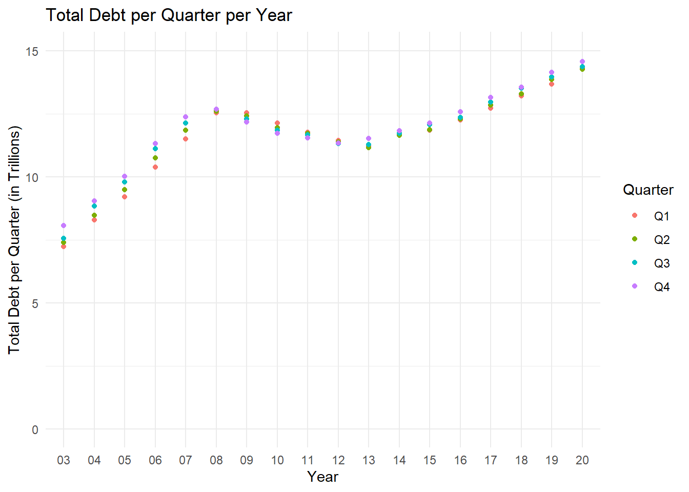
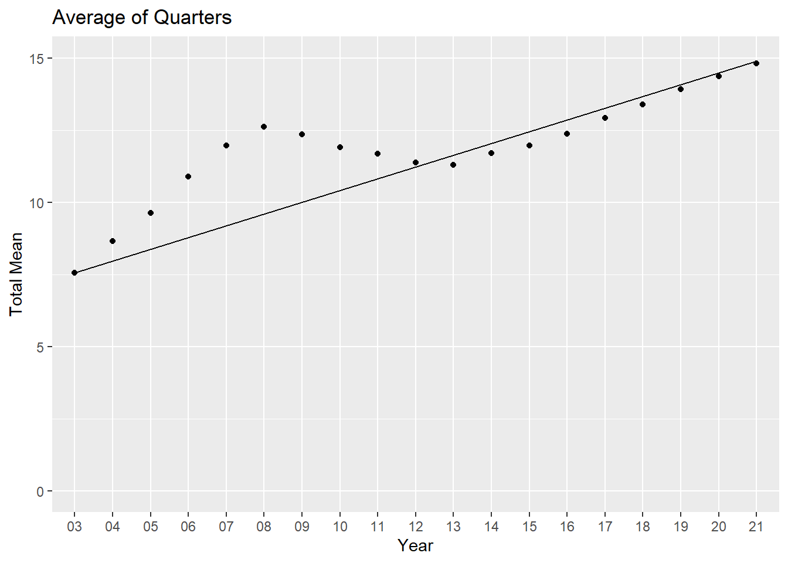
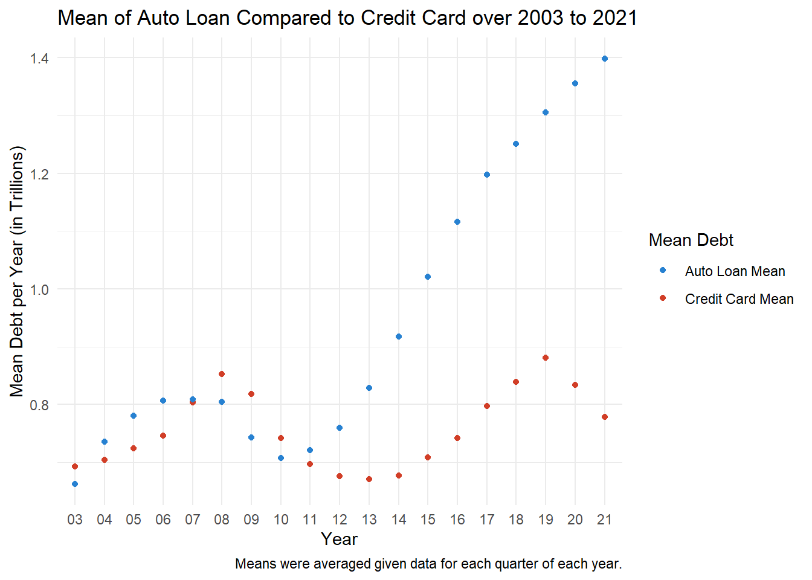

| Year and Quarter | Mortgage | HE Revolving | Auto Loan | Credit Card | Student Loan | Other | Total |
|---|---|---|---|---|---|---|---|
| 03:Q1 | 4.942 | 0.242 | 0.641 | 0.688 | 0.2407 | 0.4776 | 7.2313 |
| 03:Q2 | 5.080 | 0.260 | 0.622 | 0.693 | 0.2429 | 0.4860 | 7.3839 |
| 03:Q3 | 5.183 | 0.269 | 0.684 | 0.693 | 0.2488 | 0.4773 | 7.5551 |
| 03:Q4 | 5.660 | 0.302 | 0.704 | 0.698 | 0.2529 | 0.4486 | 8.0655 |
| 04:Q1 | 5.840 | 0.328 | 0.720 | 0.695 | 0.2598 | 0.4465 | 8.2893 |
| 04:Q2 | 5.967 | 0.367 | 0.743 | 0.697 | 0.2629 | 0.4231 | 8.4600 |
Challenge 6
Here is a preview of the data we will be using.
# A tibble: 518 × 4
Year Quarter Type.of.Debt Value
<dbl> <chr> <chr> <dbl>
1 3 Q1 Mortgage 4.94
2 3 Q1 HE.Revolving 0.242
3 3 Q1 Auto.Loan 0.641
4 3 Q1 Credit.Card 0.688
5 3 Q1 Student.Loan 0.241
6 3 Q1 Other 0.478
7 3 Q1 Total 7.23
8 3 Q2 Mortgage 5.08
9 3 Q2 HE.Revolving 0.26
10 3 Q2 Auto.Loan 0.622
# ℹ 508 more rowsAbove, I’ve printed one of the tables that I transformed, but eventually I ended up not using it to create any graphs.
Below, I’ve created four graphs, one of which is evolution, one is part-whole, and two are scatterplots. The evolution one shows the total debt mean over over the years 2003 to 2021, while the part-whole gives a comparative look at the mortgage debt mean in each year, and how each year’s debt compares to the other.


